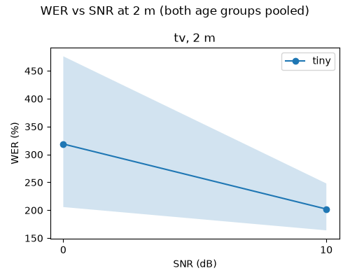
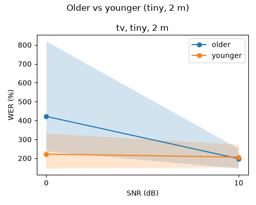
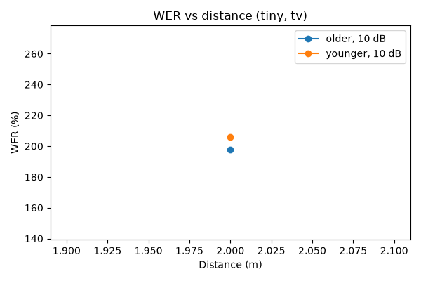
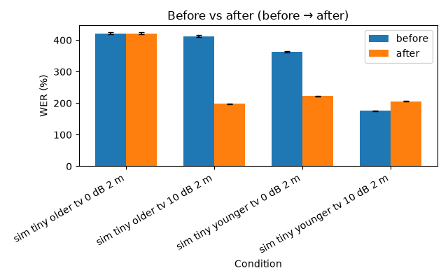

Run id fix-after, config hash f10d2bed845e. Models: tiny. Usable threshold: WER under 20.0%; bootstrap 100 iters, seed 0.
Best model: tiny (overall WER 260.4%).
| Noise | SNR (dB) | Older WER [95% CI] | Younger WER [95% CI] | Older usable | Younger usable |
|---|---|---|---|---|---|
| tv | 0 | 421.5% [236.8%–818.8%] | 222.2% [145.0%–330.3%] | 0.0% | 0.0% |
| tv | 10 | 197.8% [145.4%–250.3%] | 206.1% [152.1%–272.0%] | 0.0% | 0.0% |



In the sim, SNR is fixed at the mic, so distance only changes echo.
Note: clean (none) is not in this run for tiny.
| Noise | Condition | Worst-group WER | Other-group WER | Usable rate | Median clip: reference → hypothesis | Worst clip: reference → hypothesis |
|---|---|---|---|---|---|---|
| tv | 2 m, 0 dB, older | 421.5% | 222.2% | 0.0% | luckily the dagger could not penetrate the bullet proof vest → are you going to stop i am going to be coming back please come back please come back please come back please come back please come back | a museum representative stated that the novella is final drawings were lost → now i think it is true i am right as you can see it is true i am right i am right i am right i am right i am right i am right i am right i am right i am right i am right i am right i am right i am right i am right i am right i am right i am r |
| Condition | Before WER [95% CI] | After WER [95% CI] | Delta (pp) | Usable before → after |
|---|---|---|---|---|
| sim tiny older tv 0 dB 2 m | 421.5% [201.2–798.8] | 421.5% [236.8–818.8] | +0.0 | 0% → 0% |
| sim tiny older tv 10 dB 2 m | 411.8% [164.2–788.4] | 197.8% [145.4–250.3] | -214.0 | 0% → 0% |
| sim tiny younger tv 0 dB 2 m | 362.6% [168.6–702.5] | 222.2% [145.0–330.3] | -140.4 | 0% → 0% |
| sim tiny younger tv 10 dB 2 m | 175.8% [111.8–254.9] | 206.1% [152.1–272.0] | +30.3 | 0% → 0% |

manifest_path: data\manifest.csv clips_per_group: 10 distances_m: - 2.0 noise_files: tv: - data\noise\tv.wav snr_db: - 10.0 - 0.0 include_clean: false models: - tiny vad_filter: true device: cpu compute_type: int8 room: dims_m: - 5.0 - 4.0 - 2.7 rt60_s: 0.5 mic_pos_m: - 1.0 - 2.0 - 1.2 source_height_m: 1.2 noise_pos_m: - 4.5 - 3.5 - 1.0 usable_wer: 0.2 bootstrap_iters: 100 cache_dir: data\cache\transcribe runs_dir: runs report: reference_distance_m: 2.0 distance_snr_db: - null - 10.0 distance_noise: tv best_model: null seed: 0